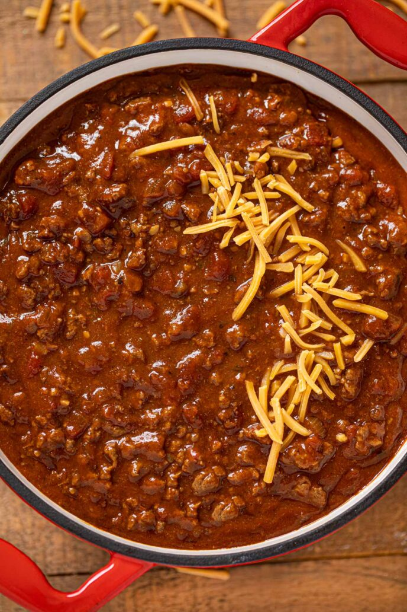

Texas Chili
From Sabrina Snyder on Dinner then Dessert

Description
Texas Chili is a classic spicy bean-free chili known as “Bowl o’ Red” that’s smoky, beefy and full of flavor. Perfect for game day, cookouts and crockpots!
Ingredients
- 2 tablespoons vegetable oil
- 2 yellow onions, diced
- 3 garlic cloves, finely minced
- 2 pounds ground beef
- 1 teaspoon kosher salt
- 1/4 cup ancho chile powder
- 2 tablespoons cumin
- 1 tablespoon paprika
- 1 tablespoon brown sugar
- 29 ounces diced tomatoes
- 6 ounces tomato paste
- 4 cups beef broth
Steps
- Add vegetable oil and onions to a large dutch oven on medium heat and cook until the onions are translucent, about 6-8 minutes.
- Add the garlic, and cook for 1 minute stirring well.
- Add the ground beef, breaking apart as you cook it for 6-8 minutes but leave the chunks a bit larger, and allow the beef to sear well.
- Add in the salt, ancho chile powder, cumin, paprika and brown sugar and stir well, cooking for 1 minute.
- Add in the diced tomatoes, and tomato paste and whisk well until the tomato paste is well mixed in.
- Add in the beef broth and bring to a simmer, reduce the heat to medium low and cook for 1 hour, stirring every fifteen minutes.
- Chili is done when the beef broth is reduced to the right consistency where the ground beef is not lost in the gravy.